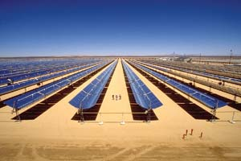
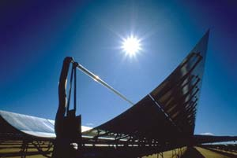

A new solar plant in Nevada shows the potential of the southwestern United States’ deserts to provide a significant amount of clean, renewable energy from concentrating solar power (CSP). Though most people are more familiar with photovoltaic (PV) systems, CSP is one of the most promising large-scale energy technologies.
The combination of intense sun and large areas of flat land make the Southwest an ideal location for CSP systems. One type of CSP is parabolic trough technology, in which fields of curved mirrors focus solar radiation onto collector tubes. The collected 750 degree thermal energy creates steam that powers electric generators. According to the U.S. Department of Energy (DOE), CSP plants covering 9 percent of Nevada could generate enough electricity to meet the needs of the entire United States!
Traditionally, PV technology has received the most attention in the solar power industry. PV systems use the sun’s light (radiant energy) to produce electricity, usually for small-scale applications. CSP, however, uses the sun’s heat (thermal energy) to produce power in utility-size installations. For example, Nevada Solar One - a 64 megawatt (MW) CSP plant under construction in Boulder City - will produce enough electricity to power 40,000 homes, resulting in a reduction in annual greenhouse gases equivalent to removing 20,000 cars from U.S. roads.
Parabolic trough plants, ranging in size from 14 to 80 MW, have been operating efficiently in the Mojave Desert for as long as 20 years. The Nevada Solar One project, the largest solar-electric plant to be built in the last 15 years, was designed by Solargenix Energy.
According to Mark Mehos, CSP program manager at the DOE’s National Renewable Energy Laboratory, parabolic trough technology currently is the most cost-effective solar option because it uses inexpensive materials - gears, turbines, glass, steel and aluminum - instead of more expensive silicon. With the DOE’s stated goal of installing 1,000 MW of CSP (enough to power nearly 750,000 homes) by 2010, solar thermal technology is one of many proven forms of alternative energy leading the charge toward energy independence.
|
 NATIONAL RENEWABLE ENERGY LABORATORY Parabolic troughs (shown here in the Mojave desert) convert the sun’s heat into electricity. |
 NATIONAL RENEWABLE ENERGY LABORATORY Parabolic troughs (shown here in the Mojave desert) convert the sun’s heat into electricity. |
|